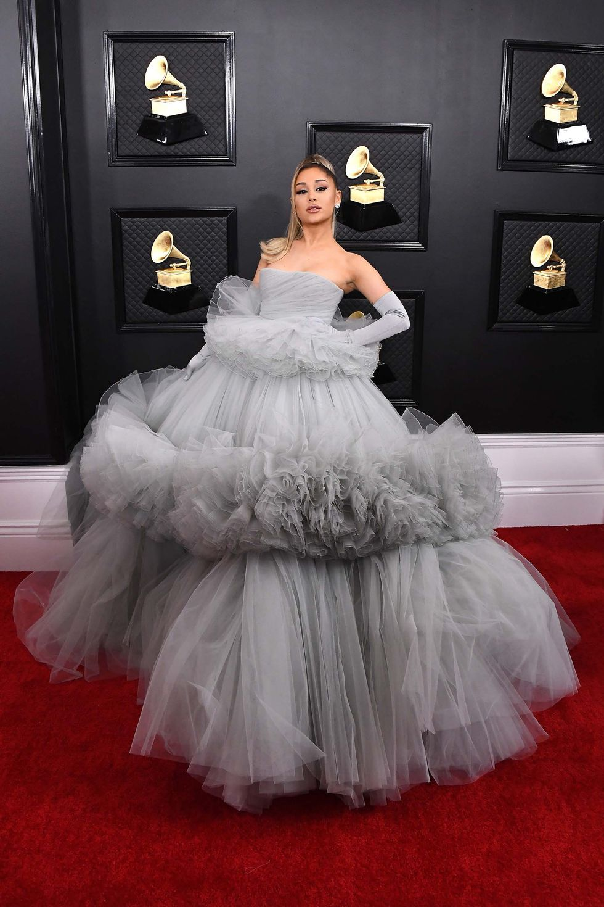
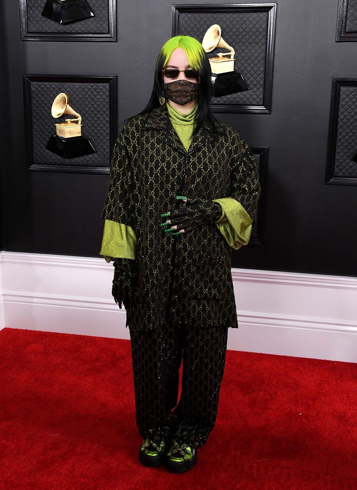
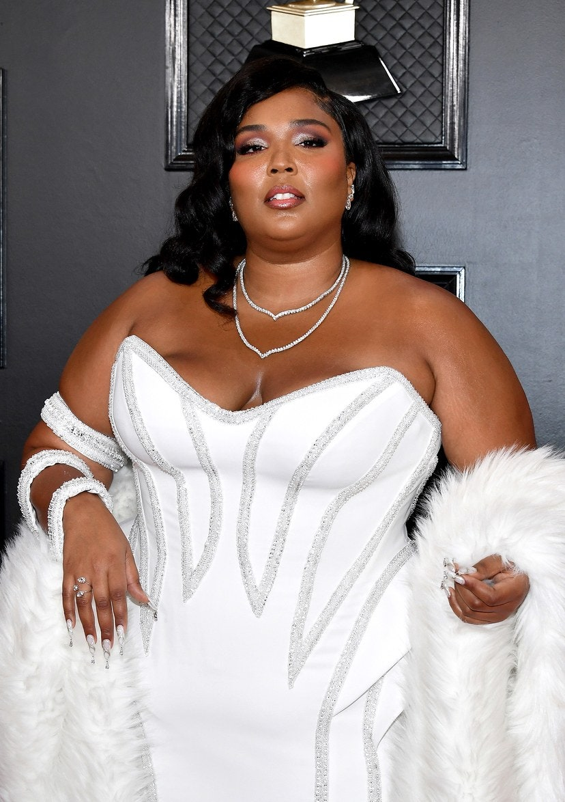
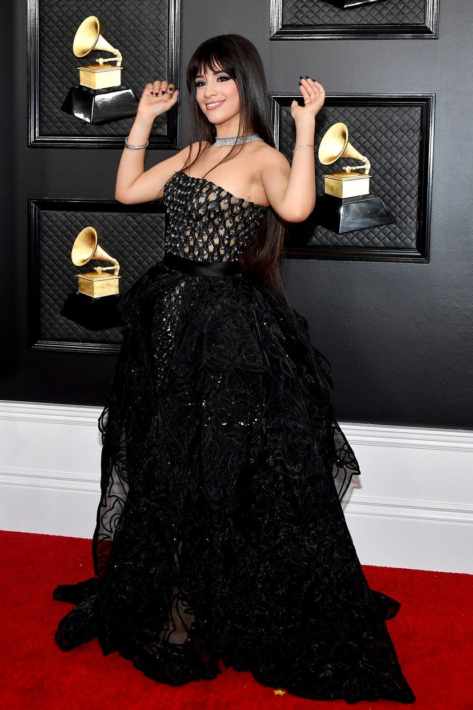
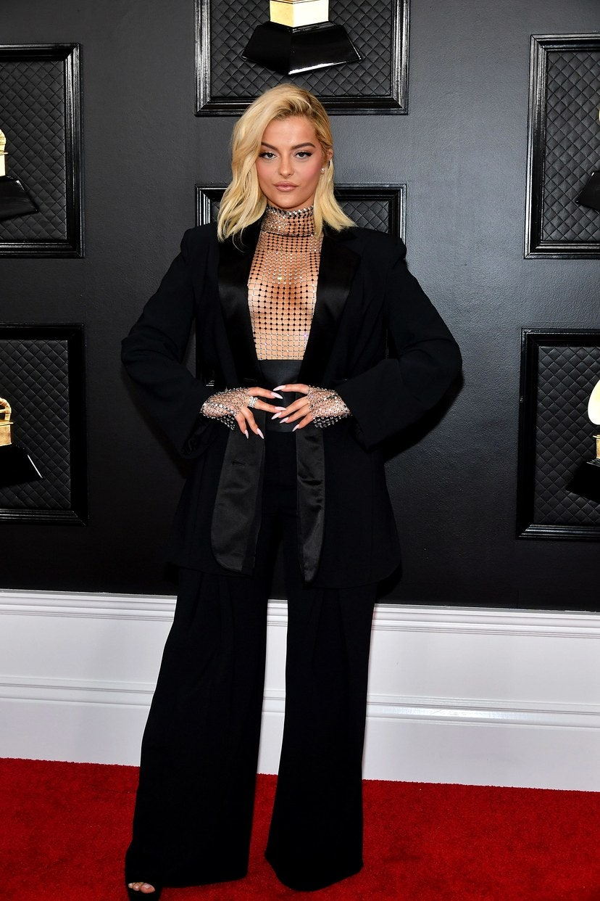
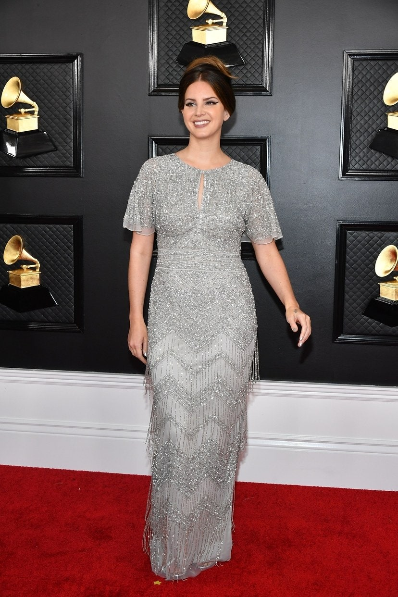
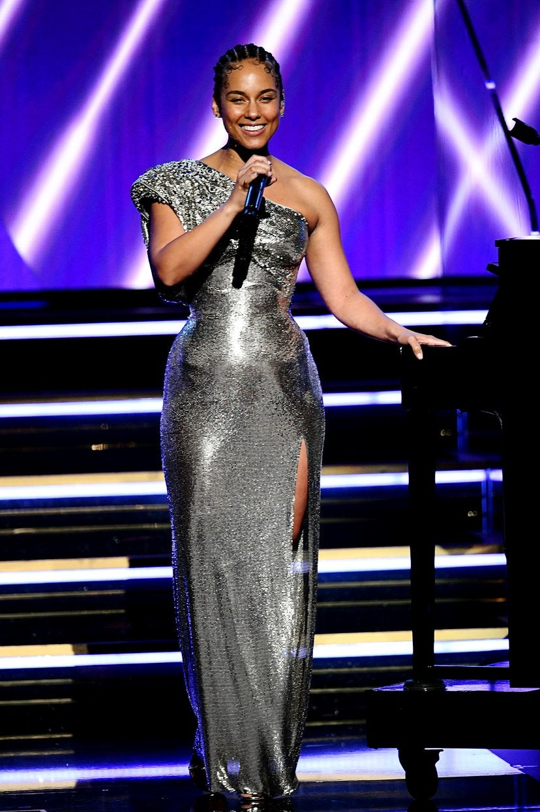
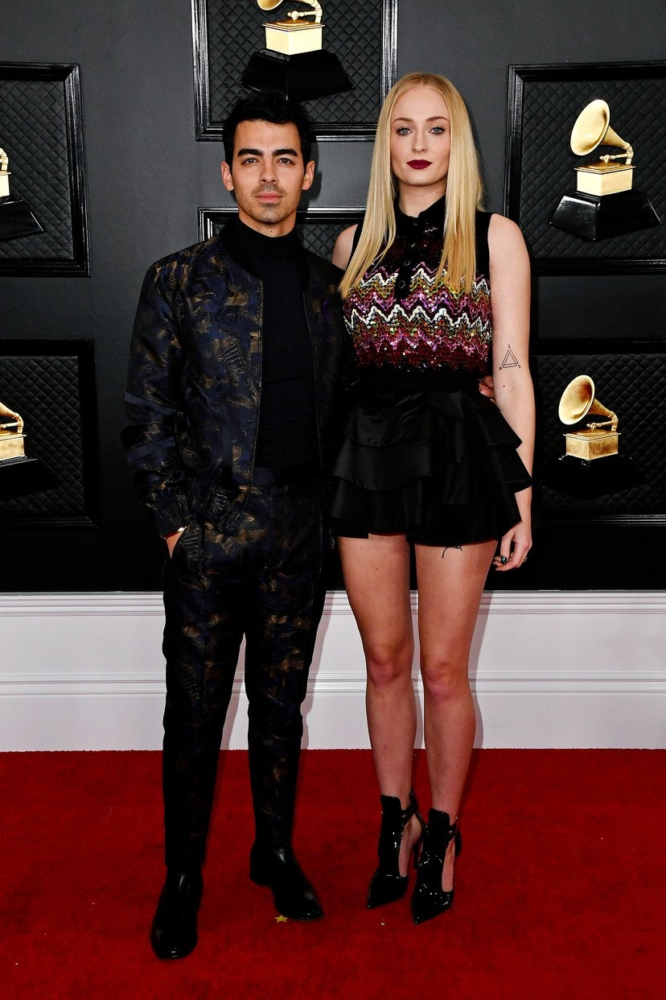
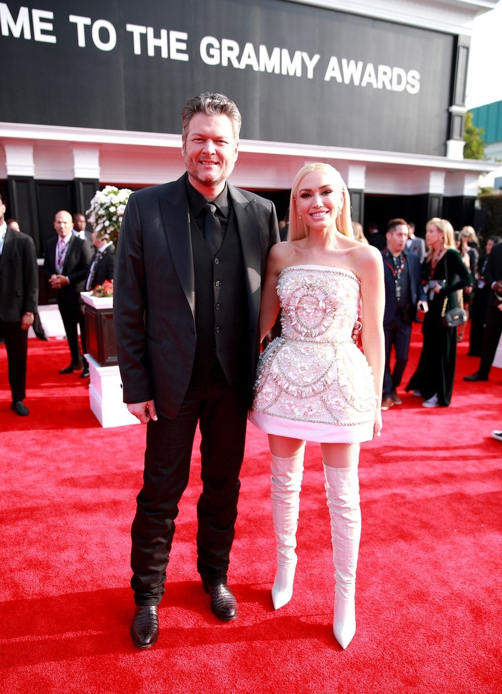

Un año más, el mes pasado se entregaron en Los Angeles los premios más importantes del mundo de la música: los Grammy 2020. Antes de la gala, en la alfombra roja se dieron cita estrellas del mundo del cine, la moda y, por supuesto, la música. Esta 62ª edición se celebró en el Staples Center y estuvo presentada por la cantante Alicia Keys. Nada más empezar la ceremonia de entrega, hubo un sentido homenaje al jugador de baloncesto Kobe Bryant que falleció horas antes en un accidente de helicóptero. “Para ser honestos, todos sentimos una tristeza enorme. Esta mañana, Los Ángeles, América y todo el mundo han perdido un héroe", afirmó Keys. Después interpretó el tema 'It’s so hard to say goodbye' junto a Boyz II Men en memoria de Bryant y de su hija Gianna, de 13 años, que también ha fallecido. En la lista de ganadores, Billie Eilish fue la clara vencedora ( además hizo historia al convertirse en la persona más joven nominada en las cuatro categorías principales). Se llevó finalmente cinco galardones: entre estos las cuatro principales categorías: grabación del año por 'Bad guy', álbum del año por 'When we all fall asleep, where do we go?', canción de nuevo por 'Bad guy', mejor nueva artista y mejor álbum de pop vocal contemporáneo. Rosalía se llevó el gramófono a casa por mejor disco latino de rock, urbano o alternativo por su álbum 'El mal querer'. Repasamos todos los estilismos de la alfombra roja que fueron de lo más atrevidos, sensuales y sorprendentes. ¿Cuál es tu favorito?
1/10
Rosalía confirmó la tendencia del cuero en la alfombra roja con un modelo asimétrico y con flequillos, creación de Alexander Wang.

2/10
Ariana Grande sorprendió con un vestido maxi con falda de tul diseñada en bloques, es una obra del diseñador italiano Giambattista Valli.

3/10
Fiel a su estilo extravagante, Billie Eilish sorprendió en la alfombra con un traje Gucci en colores negro y verde limón a juego con los colores de su cabello.

4/10
Lizzo fue de las primeras celebridades en llegar a la alfombra roja. La cantante llevó un vestido strapless firmado por Versace.

5/10
Camila Cabello deslumbró con un modelo en color negro, con aplicaciones brillantes y brocados extraordinarios diseñado por Versace.

6/10
Bebe Rexha mostró cómo se lleva un traje en la alfombra roja con un modelo diseñado por Christian Cowan.

7/10
Con un look de inspiración sesentera y un peinado magnífico, Lana del Rey deslumbró en la alfombra roja de los premios Grammy 2020.

8/10
Alicia Keys fungió como host de los Grammy 2020 y deslumbró con un look platinado con escote asimétrico creado por Atelier Versace.

9/10
Sophie Turner llevó un vestido mini cuya falda con volantes se convirtió en el highlight del atuendo. Es una prenda diseñada por Louis Vuitton.

10/10
Gwen Stefani apareció con Blake Shelton en la alfombra roja. La cantante llevó un vestido strapless firmado por Dolce & Gabbana, combinado con botas altas.